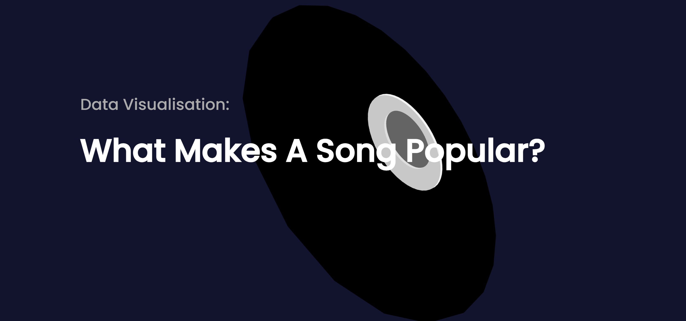

Website

The website, presents the three interactive visualisations I created: an equaliser visualisation comparing songs' audio features, a CD visualisation showing individual tracks' features, and a summary visualisation highlighting trends in these features over the years.
Go to Website